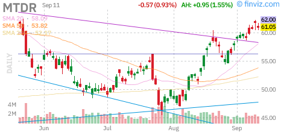
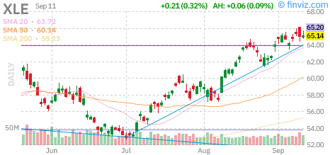
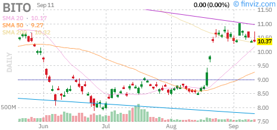
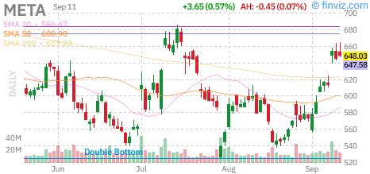
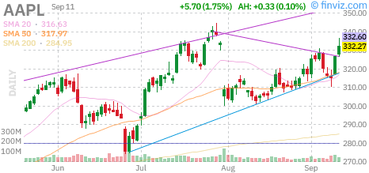
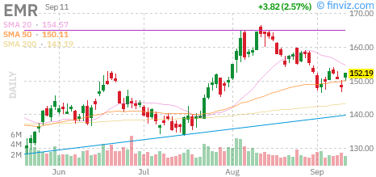
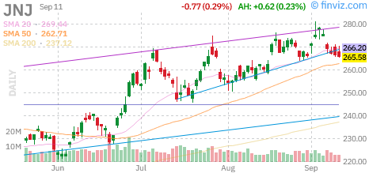
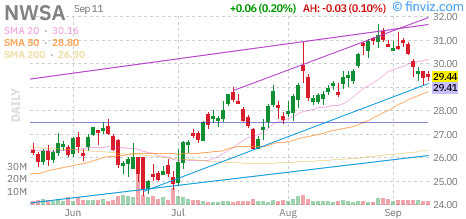

Top 8 conditionnel RECOVERY — 8 thèses, leurs objections et les niveaux à surveiller
Huit configurations pour lundi, avec deux arbitrages prioritaires. Apple possède le rendez-vous produit le plus proche ; Emerson, JNJ et News Corp préparent des replis. Meta reste un rebond à confronter au coût de ses investissements. Dans l’énergie, Matador et XLE expriment largement le même risque : choisir la meilleure entrée vaut mieux que les additionner automatiquement. BITO complète le radar avec un risque de véhicule et de gap distinct.
Les six actions et deux ETF sont issus du même univers de recherche américain. Les niveaux reposent sur la clôture du vendredi 11 septembre. Cette édition prépare le lundi 14 ; aucune position n’est réputée ouverte pendant le week-end.
Le S&P 500 à 7 656,98 reste au-dessus de sa moyenne 50 séances (7 607,34), ce qui soutient la recherche de configurations haussières. Le VIX à 15,84 est néanmoins supérieur à sa moyenne 14 jours de 15,47 : le calme relatif n’efface pas le risque Fed. La lecture RECOVERY est une synthèse des marchés, pas une probabilité de gain. Sa composante crédit utilise des prix sans réinvestissement des distributions et l’historique VIX ne permet pas le modèle long initialement demandé ; ces limites empêchent de surinterpréter sa précision.
Stratégie de séance : Les objectifs viennent principalement d’une formule : T1 à 1,5 ATR au-dessus de l’entrée et T2 à 2 ATR, sauf résistance intermédiaire retenue par le moteur (Apple). Ils ne prouvent pas l’existence d’une résistance observée. Le stop applique le plus large de 1,5 ATR et du plancher de 3 % : sur XLE, ce plancher élargit le risque au-delà du gain jusqu’à T1, donc le rapport gain/risque initial reste inférieur à 1. Cette asymétrie impose de juger aussi la fréquence des pertes et les sorties réelles, pas seulement la cible. Les stops et objectifs appliquent la politique existante du scanner, distincte du protocole intraday présenté dans le Daily. Le stop dur protège uniquement la quantité réellement achetée. À T1, alléger la moitié ; remonter le stop du solde au prix moyen payé seulement après vente effective de cette tranche. Le solde vise T2. Une clôture sous l’invalidation appelle une sortie discrétionnaire même si le stop n’a pas été touché. L’horizon maximal est de dix séances à partir du remplissage, puis sortie du reliquat. Les gains, frais, gaps et quantités effectivement exécutées doivent être enregistrés ; le calcul de R présenté utilise le plafond d’entrée et ne promet pas le résultat obtenu.
| Indice / Actif | Prix | Variation | Signal |
|---|---|---|---|
| S&P 500 | 7 656,98 | Clôture du 11 septembre | Au-dessus de la moyenne 50 séances 7 607,34 |
| VIX | 15,84 | Clôture du 11 septembre | Au-dessus de sa moyenne 14 jours 15,47 |
La moyenne des 28 paires est de -0,014, mais MTDR/XLE atteint 0,84 sur 120 observations de rendements logarithmiques. Les effets de signes opposés se compensent dans la moyenne ; ils n’effacent pas cette poche énergie. Une corrélation passée peut aussi changer brutalement après la Fed. Cette mesure sert à limiter une duplication, pas à promettre une protection.
| Date | Événement | Impact | Horaire / note |
|---|---|---|---|
| Mercredi 16 septembre · 14 h 30 | Ventes au détail américaines | Consommation et taux | Mesurer la réaction ; les attentes de taux peuvent dominer la lecture du chiffre. |
| Mercredi 16 septembre · 20 h / 20 h 30 | Décision de taux de la Réserve fédérale (FOMC), projections économiques et conférence | Élevé | Le choix de traverser l’annonce doit être écrit avant toute entrée. |
| Vendredi 18 septembre · clôture | Rééquilibrages d’indices | Flux de clôture | Effet possible sur les cours, aucune hausse garantie. Inclusions effectives le 21. |
| Secteur (ETF) | Perf. séance | Signal de régime | Exposition du scan |
|---|---|---|---|
| Énergie | MTDR / XLE | Deux expositions au même moteur pétrole | Arbitrer plutôt que doubler |
| Technologie / communication | AAPL / META / NWSA | Trois métiers différents, sensibilités aux taux et à la demande | Éviter une accumulation de risque croissance |
| Industrie / santé | EMR / JNJ | Replis, pas de résultats imminents | Structures propres à chaque titre |
Le calendrier collecté couvre jusqu’au 2026-09-18 ; l’horizon des positions va jusqu’au 25 septembre. Pour la fin de fenêtre, seuls les rendez-vous du registre primaire sont couverts : ce calendrier ne certifie pas l’absence d’autres événements. Correction du PPI américain : la date officielle est le 2026-09-10, et non le 2026-09-14 indiqué par le flux collecté. Il n’est donc pas un rendez-vous à venir lundi. Calendrier officiel BLS. La Fed du 16 septembre tombe dans l’horizon de toutes les fiches. Avant achat, écrire « maintien autorisé : oui/non ». Sans autorisation de maintien, solder avant 19 h 55, heure de Paris, et ne pas ouvrir de position après 19 h 50 ce mercredi. Ce sont des marges opérationnelles choisies, pas les horaires de la Fed. Les rééquilibrages du vendredi peuvent gonfler les volumes de clôture sans améliorer la thèse économique. Calendrier Fed · Calendrier détaillé et sources primaires.
Niveaux (entrée, stop, TP, R/R) calculés sur la clôture de référence. L'entrée est un prix unique : un ordre à cours limité valable la séance, sans condition de VWAP. Si le prix n'est pas touché, il n'y a pas de trade. Aucun dimensionnement de portefeuille n'a été calculé pour ce scan : les lignes sont des plans conditionnels indépendants, la taille de position reste entièrement à la main du lecteur.
| Ticker | Setup | Entrée | Stop | TP | R/R |
|---|---|---|---|---|---|
| MTDR CONV | Production, intégration et désendettement | 61,05 | 58,45 | 63,65 | 1,00 |
| XLE CONV | Énergie américaine, concentration sectorielle | 65,14 | 63,18 | 66,95 | 0,92 |
| BITO CONV | Bitcoin par contrats à terme et swaps | 10,37 | 9,9 | 10,84 | 1,00 |
Matador associe hausse de production et discipline financière à démontrer. Le communiqué du 5 août relève la prévision annuelle de production et estime le flux de trésorerie disponible ajusté de 2026 autour de 900 millions de dollars, sous les hypothèses de prix à terme du pétrole et du gaz de fin juillet. Ce montant est une projection conditionnelle, pas une réserve acquise. L’intégration des actifs achetés et le remboursement de dette restent décisifs : produire davantage ne crée pas automatiquement davantage de valeur par action. Le mouvement déjà engagé explique la sélection momentum, mais réduit l’intérêt de poursuivre un gap. L’objection principale combine baisse du pétrole, coûts d’intégration et levier financier. Avec XLE, le risque énergie se cumule fortement ; les deux lignes sont des alternatives de mise en œuvre, pas deux sources indépendantes de diversification. Source de l’émetteur Lecture du prix : clôture 61,05 $, moyenne exponentielle 20 séances 57,89 $, 50 séances 55,45 $ et 200 séances 52,88 $ ; RSI 67,3. Ces moyennes exponentielles utilisent 300 séances continues. Le graphique Finviz affiche des moyennes simples (SMA) : ces deux calculs ne sont pas interchangeables. Un historique plus long peut aussi modifier l’amorçage des moyennes exponentielles.

Deuxième objectif : 64,52 · Horizon : 10 séances
XLE répartit le risque spécifique entre des entreprises énergétiques américaines, avec notamment Exxon Mobil, Chevron et ConocoPhillips dans le portefeuille présenté par le gestionnaire. Il conserve pourtant un risque sectoriel concentré : plusieurs lignes réagissent au même prix du pétrole, aux marges et aux investissements du secteur. C’est une façon de suivre le thème énergie en réduisant la dépendance à l’intégration d’une acquisition chez Matador ; ce n’est pas une protection contre une baisse du brut. La corrélation mesurée avec MTDR impose de raisonner sur leur exposition cumulée. Une détente géopolitique ou des signes de demande plus faibles pourraient reprendre une partie du mouvement. La présence d’un ETF ne rend donc pas le panier mécaniquement diversifié. Le plan reste une continuation conditionnelle, avec une entrée plafonnée et une invalidation propre au fonds. Source de l’émetteur Lecture du prix : clôture 65,14 $, moyenne exponentielle 20 séances 63,46 $, 50 séances 61,12 $ et 200 séances 55,76 $ ; RSI 66,1. Ces moyennes exponentielles utilisent 300 séances continues. Le graphique Finviz affiche des moyennes simples (SMA) : ces deux calculs ne sont pas interchangeables. Un historique plus long peut aussi modifier l’amorçage des moyennes exponentielles.

Deuxième objectif : 67,55 · Horizon : 10 séances
BITO donne une exposition au bitcoin par des contrats à terme et des swaps, sans détention directe du bitcoin. Le fonds renouvelle son exposition aux contrats à terme : ce roulement peut modifier la performance par rapport au bitcoin au comptant. Une échéance de contrat ne suffit pas à déterminer le jour précis du roulement. La base entre contrats et comptant, les coûts de roulement et le risque de contrepartie peuvent modifier le résultat obtenu. Les distributions du fonds ne constituent pas un rendement supplémentaire indépendant de sa valeur. La configuration est momentum, mais la clôture reste sous la moyenne exponentielle longue : il s’agit d’une reprise, pas d’une tendance longue entièrement rétablie. Le bitcoin continue de traiter lorsque l’ETF est fermé ; un mouvement de week-end peut rendre les niveaux préparés inutilisables dès lundi. Source de l’émetteur Lecture du prix : clôture 10,37 $, moyenne exponentielle 20 séances 10,16 $, 50 séances 9,65 $ et 200 séances 11,15 $ ; RSI 58,3. Ces moyennes exponentielles utilisent 300 séances continues. Le graphique Finviz affiche des moyennes simples (SMA) : ces deux calculs ne sont pas interchangeables. Un historique plus long peut aussi modifier l’amorçage des moyennes exponentielles.

Deuxième objectif : 10,99 · Horizon : 10 séances
| Ticker | Setup | Entrée | Stop | TP | R/R |
|---|---|---|---|---|---|
| META CONV | Publicité et coût des infrastructures IA | 648,03 | 615,97 | 680,08 | 1,00 |
| AAPL CONV | Semaine de lancement iPhone | 332,27 | 320,2 | 344,57 | 1,02 |
La publicité progresse, mais le cash disponible se contracte. Au deuxième trimestre, le chiffre d’affaires augmente de 28 %, alors que la marge opérationnelle descend à 31 %, contre 43 % un an plus tôt. Les investissements, loyers financiers inclus, absorbent presque tout le flux d’exploitation : le flux de trésorerie disponible annoncé ressort à 784 millions de dollars. Des charges juridiques et de restructuration pèsent également ; attribuer toute la baisse de marge à l’IA serait faux. La configuration cherche une poursuite du rebond malgré ce coût d’investissement. L’objection est forte : une bonne monétisation publicitaire ne suffit pas si l’actionnaire attend longtemps sa conversion en cash. Le prochain résultat est hors de l’horizon du plan ; aucun nouveau catalyseur de bénéfice n’est attendu cette semaine. Une hausse des rendements après la Fed pourrait donc faire reprendre au marché cette prime de croissance. Source de l’émetteur Lecture du prix : clôture 648,03 $, moyenne exponentielle 20 séances 602,53 $, 50 séances 597,23 $ et 200 séances 624,81 $ ; RSI 67,2. Ces moyennes exponentielles utilisent 300 séances continues. Le graphique Finviz affiche des moyennes simples (SMA) : ces deux calculs ne sont pas interchangeables. Un historique plus long peut aussi modifier l’amorçage des moyennes exponentielles.

Deuxième objectif : 690,76 · Horizon : 10 séances
La semaine produit donne à Apple un rendez-vous observable : précommandes de l’iPhone 18 Pro le 12 septembre, iOS 27 le 14 et disponibilité commerciale le 18. La thèse porte sur la capacité du lancement à prolonger l’intérêt pour le titre, puis à se traduire en demande et en mix produit. À ce stade, les dates et les fonctionnalités annoncées ne démontrent ni volumes vendus ni marge supplémentaire. Les délais de livraison isolés peuvent aussi refléter la disponibilité de l’offre ; ils ne mesurent pas seuls la demande. Le risque contrarien est donc une prise de bénéfices sur une annonce déjà anticipée. La hausse technique reste recevable seulement au prix limite préparé : une ouverture au-dessus ne justifie pas de relever l’entrée. Apple et Meta gardent une sensibilité commune aux taux et aux dépenses technologiques, malgré leurs métiers différents. Source de l’émetteur Lecture du prix : clôture 332,27 $, moyenne exponentielle 20 séances 319,03 $, 50 séances 314,05 $ et 200 séances 287,94 $ ; RSI 62,8. Ces moyennes exponentielles utilisent 300 séances continues. Le graphique Finviz affiche des moyennes simples (SMA) : ces deux calculs ne sont pas interchangeables. Un historique plus long peut aussi modifier l’amorçage des moyennes exponentielles.

Deuxième objectif : 348,36 · Horizon : 10 séances
| Ticker | Setup | Entrée | Stop | TP | R/R |
|---|---|---|---|---|---|
| EMR CONV | Automatisation : repli après perspectives relevées | 152,19 | 146,52 | 157,86 | 1,00 |
| JNJ CONV | Santé : repli sans publication imminente | 265,58 | 257,28 | 273,87 | 1,00 |
| NWSA CONV | Abonnements, immobilier numérique et édition | 29,44 | 28,44 | 30,43 | 0,99 |
Emerson est une préparation sur repli après le relèvement des perspectives annuelles du 4 août. Le troisième trimestre distingue une forte progression de Test & Measurement, avec des ventes sous-jacentes en hausse de 23 %, d’une activité Final Control plus lente, à 3 %. Cette dispersion est utile : elle empêche de présenter toute l’automatisation industrielle comme une reprise uniforme. L’intérêt du dossier est de revenir près de ses moyennes après l’annonce, sans payer une cassure déjà étendue. L’objection est le cycle d’investissement des clients : une bonne guidance ne protège pas contre des reports de commandes si les conditions de financement se durcissent. La Fed peut donc peser autant que les résultats passés dans les dix séances à venir. Un repli qui enfonce le plus bas de référence ne serait plus une consolidation constructive ; la thèse devrait alors être abandonnée, sans repousser le stop. Source de l’émetteur Lecture du prix : clôture 152,19 $, moyenne exponentielle 20 séances 152,92 $, 50 séances 151,04 $ et 200 séances 144,18 $ ; RSI 48,9. Ces moyennes exponentielles utilisent 300 séances continues. Le graphique Finviz affiche des moyennes simples (SMA) : ces deux calculs ne sont pas interchangeables. Un historique plus long peut aussi modifier l’amorçage des moyennes exponentielles.

Deuxième objectif : 159,75 · Horizon : 10 séances
Johnson & Johnson apporte une exposition à la santé après le relèvement des perspectives présenté avec les résultats du 15 juillet. Son intérêt dans cette sélection vient du repli vers les moyennes, davantage que d’une annonce immédiate. Le calendrier annoncé par JNJ fixe les prochains résultats au 13 octobre, au-delà de l’horizon de dix séances : le plan ne repose donc pas sur un chiffre trimestriel imminent. La diversité entre médicaments et technologies médicales peut réduire la dépendance à un seul cycle de dépenses, mais ne neutralise ni concurrence, ni pression sur les prix, ni litiges. La lecture contrarienne est qu’un titre dit défensif peut sous-performer si le marché privilégie les valeurs de croissance après la Fed. Le rebond doit respecter son invalidation propre ; le caractère défensif du secteur ne justifie ni une taille supérieure ni la conservation d’une structure rompue. Source de l’émetteur Lecture du prix : clôture 265,58 $, moyenne exponentielle 20 séances 268,06 $, 50 séances 261,56 $ et 200 séances 236,25 $ ; RSI 48,5. Ces moyennes exponentielles utilisent 300 séances continues. Le graphique Finviz affiche des moyennes simples (SMA) : ces deux calculs ne sont pas interchangeables. Un historique plus long peut aussi modifier l’amorçage des moyennes exponentielles.

Deuxième objectif : 276,64 · Horizon : 10 séances
News Corp offre un repli sur un ensemble de métiers dont les moteurs sont identifiables. Au quatrième trimestre fiscal publié le 5 août, les revenus progressent de 11 % à 2,34 milliards de dollars ; la hausse ajustée est de 7 %, une fois notamment retiré l’effet favorable du change. Dow Jones, les services immobiliers numériques et l’édition contribuent à cette progression. Le flux de trésorerie disponible annuel augmente aussi, mais bénéficie d’améliorations du besoin en fonds de roulement : il serait imprudent d’extrapoler tout le gain. L’intérêt est la combinaison d’abonnements et d’actifs numériques, sans nouvelle publication attendue pendant le plan. L’objection concerne l’exposition à l’immobilier et à la publicité, plus cyclique qu’une simple étiquette de fournisseur d’information. Le niveau technique, et non le récit des licences de contenu, doit décider de la validité du repli. Source de l’émetteur Lecture du prix : clôture 29,44 $, moyenne exponentielle 20 séances 29,89 $, 50 séances 28,93 $ et 200 séances 27,31 $ ; RSI 47,1. Ces moyennes exponentielles utilisent 300 séances continues. Le graphique Finviz affiche des moyennes simples (SMA) : ces deux calculs ne sont pas interchangeables. Un historique plus long peut aussi modifier l’amorçage des moyennes exponentielles.

Deuxième objectif : 30,76 · Horizon : 10 séances
Entrée = un prix unique, en ordre à cours limité valable la séance. Pas de zone, pas de condition de VWAP, pas de poursuite : si le marché ouvre au-dessus et n'y revient pas, la ligne ne se déclenche simplement pas. Le stop est un ordre dur, pas mental. L’ordre a un plafond unique ; le prix moyen réellement payé peut être inférieur. Le calcul utilise le prix limite, soit le prix maximal autorisé ; un remplissage inférieur modifie le risque réel et le rapport gain/risque. Aucune quantité n’est proposée : le budget de perte, le cash et les expositions doivent être vérifiés avant achat. Si le prix n'est pas touché pendant la séance, la ligne expire : elle n'est pas reportée au lendemain. Une entrée est également nulle si son filtre de surextension est franchi avant l'exécution.
Badges : ☪ ligne dont le secteur d'activité est conforme aux critères de finance islamique retenus ici (l'endettement, quand vérifié, est précisé ligne par ligne dans les invalidations — non systématiquement audité) — CONV ligne conventionnelle, non conforme.
Le régime publié vient du moteur identifié dans les preuves, avec ses propres composantes et seuils. Son score mesure un état de marché ; il ne représente pas une probabilité de réussite du panier. La lecture et les limites utiles sont précisées dans le contexte de marché ci-dessus.
Trois filtres de sélection complémentaires : Momentum (tendance + volume), Breakout (sortie de base / gap volume), Pullback (repli vers support dans un uptrend intact). Short Squeeze exclu depuis le 20 mars 2026.
Les familles utilisent des formules différentes : leurs scores ne se comparent pas. Aucune probabilité de réussite ni hiérarchie de rendement n’est affirmée par cette liste.
Entrée / stop / TP / R/R calculés sur les données de clôture réelles. 8 objectifs sur 8 sont regroupés autour de 1,50 ATR. Cette géométrie ne prouve pas à elle seule une résistance de marché. Lorsque la cible et le stop sont à des distances proches, le rapport gain/risque est mécaniquement voisin de 1. Un ordre limité est valable uniquement pendant la séance visée et sous réserve des contrôles publiés ; son exécution au prix limite ou à un prix inférieur n’est pas garantie.
Le contrôle SEC doit distinguer les offres d’actions, la dette et les opérations mixtes en lisant les dépôts primaires. Les émetteurs privés étrangers déposent également auprès de la SEC, notamment des 20-F et des 6-K : leur statut ne les dispense pas du contrôle. Les ETF suivent un régime distinct de celui des sociétés opérationnelles. La fenêtre effectivement documentée est celle des preuves de chaque ligne ; un contrôle limité à 90 jours ne permet pas d’exclure des instruments dilutifs plus anciens encore actifs. Toute classification inconnue empêche de certifier la ligne. Diversification sectorielle et géographique. Le R/R affiché est calculé au plafond d’achat ; un prix payé inférieur modifie ce rapport, avant frais et glissement. Il s'échelonne de 1:0,92 à 1:1,02 selon les lignes — 4 lignes sur 8 visent moins qu'elles ne risquent, ce qui est la contrepartie d'une cible placée à une distance réellement parcourue.
Ce scanner est fourni à titre informatif et éducatif uniquement. Il ne constitue pas un conseil financier ni une recommandation d'achat ou de vente.
Tous les setups comportent un risque. Les performances passées du scanner ne préjugent pas des résultats futurs. Les zones d'entrée, stops et objectifs sont des estimations basées sur l'analyse technique.
Avertissement de risque contextuel (Séance du lundi 14 septembre 2026) : Aucun dimensionnement ni budget disponible n’est validé. Les résultats futurs et l’espérance statistique de cette sélection sont inconnus. Les objectifs sont des repères conditionnels, les stops peuvent subir un glissement.
DailyTickers n'est pas un conseiller en investissement enregistré. Consultez toujours un professionnel qualifié avant toute décision.
© 2026 DailyTickers — /scanner/20260914/